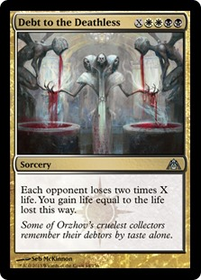
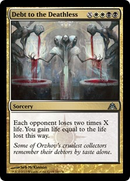

What is an Archetype?
An Archetype is a basic framework or strategy which can be drafted in a limited environment. For instance, in a cube built around different types of creatures, some archetypes might include an elf deck, a goblin deck, or a vampire deck. Archetypes are one of the most important and difficult things for a cube designer to implement correctly, because each of these archetypes will be seen over and over again by the players. Each Archetype can also be loosely categorized as Aggressive,Midrange, Controlling, or Combo.
Reanimation
Reanimation is all about putting a large and unfair creature into your graveyard, and then casting a spell to bring it back to life. Hopefully the creature you chose was powerful enough, because your deck will mostly be dedicated to getting it out.
Fast Mana
By using cards which allow you to generate a lot of resources once you cast a spell or summon a creature which is powerful enough to win you the game. Similar to Reanimation in that most of your deck is built around this premise, so if it doesn't work out, you are in trouble.
Black Devotion
This deck plays only black and spells that care about how much black stuff you have. This allows their creatures to be much more efficient for their cost than if they were playing many different colors. Unfortunately, it also means the deck has less cards to choose from and misses out on many powerful effects.
Zombies
By playing many zombie and cards which make your zombies better, this deck aims to swarm and overpower your opponent before they can get themselves off the ground. If its opponents can manage to stabilize this deck is in trouble.
Mill
Why make your opponent take damage when you can beat them a better way? Put all of your opponent's deck into their graveyard before they have a chance to draw it and you can win the game. Unfortunately, this can help make some decks more powerful and only some cards can help you reach your goal.
Dredge
In many ways the opposite of Mill, in Dredge you want to put as much of your deck into the graveyard as possible and play cards which benefit from having a full graveyard of your own. Be careful that you don't only draw cards which benefit from having a full graveyard or those to fill your graveyard with out the other though, because then you'll be out of luck!
Life Gain
Gaining life means that you can stay alive versus aggro decks and play spells which require life loss versus control decks. As a trade off, many of the cards you play in this archetype are less powerful on their own and require synergy in order to be playable.
Downsides
This deck is an aggressive deck which plays many creatures who have downsides including life loss, requiring sacrificing creatures, and other strange effects along with many small cheap creatures. The benefit is that creatures with downside are much more powerful than they should be for their cost. The problem is that everything you play has a downside.
Three Color Control
The goal of control decks is to slow down the game and win by playing high quality expensive spells. By having three colors worth of cards to look at, these decks get to play only the highest quality spells. Unfortunately, they also are less reliable since they are spread so thin and also have trouble with decks that beat them before they can slow down the game.
 
